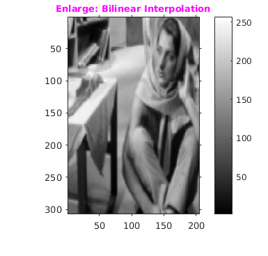

Assignment 1
CS-663 Group-163059009,16305R011,16305R006
Contents
Shrink Image By Factor
This script will shrink the image by a factor of d.
Algorithm for Shrink Image By Factor:
myShrinkImageByFactorD function will take an image and a factor d as an input and return shrink image as a output. If we give an image of MxN and if shrinking factor is d then resultant image dimension will be (M/d)x(N/d). Algo takes every dth pixel and store it in a 2-D matrix.The resultant image is a shrinked image.
tic; file='../data/circles_concentric.png'; %imfinfo(file); figure('name','Original Image'); img=imread(file); cmGray256=colormap(gray(256)); imshow(img,cmGray256),daspect([1,1,1]); title('\fontsize{10}{\color{red}Concentric Circles}'); o1 = get(gca, 'Position'); colorbar(),set(gca, 'Position', o1); %imagesc(img),daspect([1,1,1]),colormap(cmGray256),colorbar(); axis tight,axis on; figure('name','Shrink Image by 2'); outImg=myShrinkImageByFactorD(img,2); imshow(outImg,cmGray256),daspect([1,1,1]); title('\fontsize{10}{\color{magenta} Shrink Image by 2}'); axis tight,axis on; o1 = get(gca, 'Position'); colorbar(),set(gca, 'Position', o1); %Shrink Image By factor: 3 shrinkFig=figure('name','Shrink Image by 3'); outImg=myShrinkImageByFactorD(img,3); imshow(outImg,cmGray256),daspect([1,1,1]); title('\fontsize{10}{\color{magenta} Shrink Image by 3}'); o1 = get(gca, 'Position'); colorbar(),set(gca, 'Position', o1); axis tight,axis on; toc;
Elapsed time is 1.250944 seconds.

Bilinear Interpolation
The key idea is to perform linear interpolation first in one direction, and then again in the other direction. Although each step is linear in the sampled values and in the position, the interpolation as a whole is not linear but rather quadratic in the sample location.
Alogrithm for Bilinear Interpolation
For finding value of f(x,y) we have used matrix equation as it gives solution in less steps.It is assumed that we know the value of f at the four points Q11 = (x1, y1), Q12 = (x1, y2), Q21 = (x2, y1), and Q22 = (x2, y2).
Input : As an input image is given Output: As output enlarged image is obtained
tic file='../data/barbaraSmall.png'; figure('name','Original Image: BarbaraSmall'); img=imread(file); cmGray256=colormap(gray(256)); outBLImg=myBilinearInterpolation(img); outNNImg=myNearestNeighborInterpolation(img); imshow(img,cmGray256),daspect([1,1,1]); title('\fontsize{10}{\color{red} Barbara Small }'); axis tight,axis on; o1 = get(gca, 'Position'); colorbar(),set(gca, 'Position', o1); figure('name','Enlarge: Bilinear Interpolation'); imshow(outBLImg,cmGray256),daspect([1,1,1]); title('\fontsize{10}{\color{magenta}Enlarge: Bilinear Interpolation}'); axis tight,axis on; o1 = get(gca, 'Position'); colorbar(),set(gca, 'Position', o1);
Nearnest Neighbour Interpolation
Interpolation is the problem of approximating the value of a function for a non-given point in some space when given the value of that function in points around (neighboring) that point. The nearest neighbor algorithm selects the value of the nearest point and does not consider the values of neighboring points at all, yielding a piecewise-constant interpolant
We have used following code to calculate the distance :
(x-x1)^2+(y-y1)^2 .Where (x,y) are the points whose intensity is needed to be calculated.
imshow(img,cmGray256),daspect([1,1,1]); title('\fontsize{10}{\color{red} Barbara Small }'); axis tight,axis on; o1 = get(gca, 'Position'); colorbar(),set(gca, 'Position', o1); figure('name','Enlarge: Nearnest Neighbour Interpolation'); imshow(outNNImg,cmGray256),daspect([1,1,1]); title('\fontsize{10}{\color{magenta}Enlarge: Nearnest Neighbour Interpolation}'); axis tight,axis on; o1 = get(gca, 'Position'); colorbar(),set(gca, 'Position', o1);